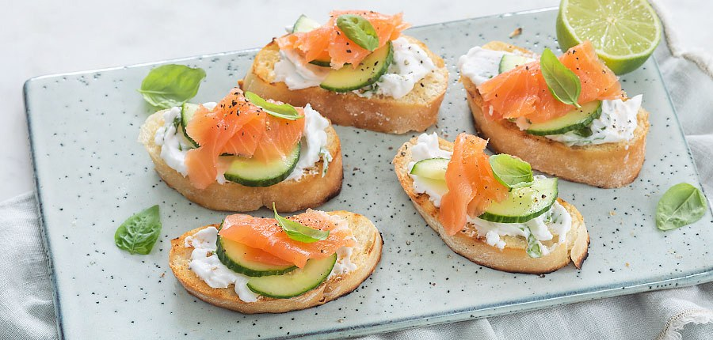

bruchettas

Ingredienten
- 1 vers ciabatta brood
- 150gr roomkaas
- 1 teentje knoflook
- verse basilicum
- 100gr gerookte zalm
- 1/3 komkommer
- 1 limoen
- peper & zout
- olijfolie
Bereiding
- Snijd het brood in plakken en besmeer met olijfolie.
- Grill de broodjes aan beide kanten in een (grill)pan licht krokant.
- Wrijf daarna in met de teen knoflook.
- Meng de roomkaas met een snufje peper en zout.
- Snijd een paar blaadjes basilicum fijn en meng ook door de roomkaas.
- Rasp de limoen en meng dit ook door het mengsel.
- Besmeer de bruschetta’s met het roommengsel, beleg met wat plakjes komkommer en verdeel wat zalm erover.
- Garneer eventueel met wat peperbesjes.